一、PC 管理后台 本次实跑截图
访问 http://127.0.0.1:5174/#/login，演示账号 admin / admin123。侧栏 7 个菜单均可正常渲染，无破损图片。
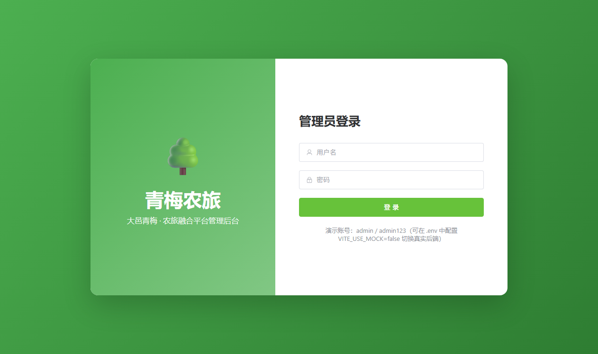
管理员登录青梅农旅 · 大邑青梅农旅融合平台管理后台；演示账号提示
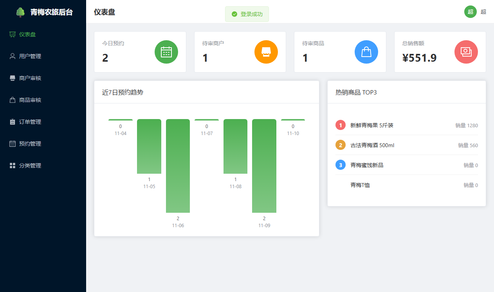
仪表盘今日预约 / 待审商户 / 待审商品 / 总销售额 + 近7日预约趋势 + 热销 TOP3
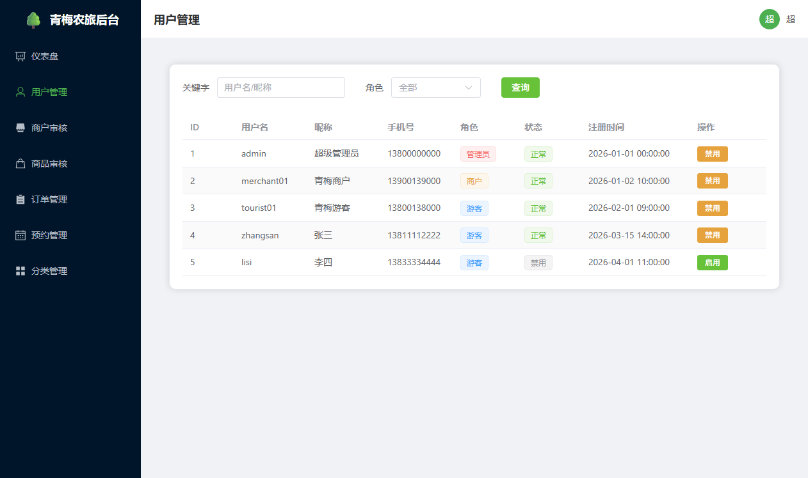
用户管理关键字、角色筛选；ID/用户名/昵称/手机号/角色/状态/注册时间
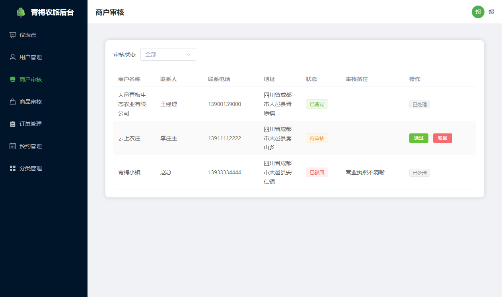
商户审核商户名称、联系人、地址、审核状态与备注
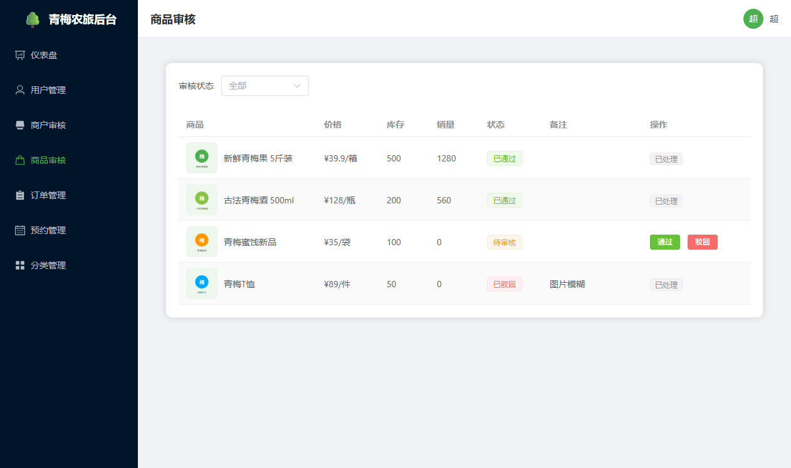
商品审核价格 / 库存 / 销量 / 状态；通过、驳回操作
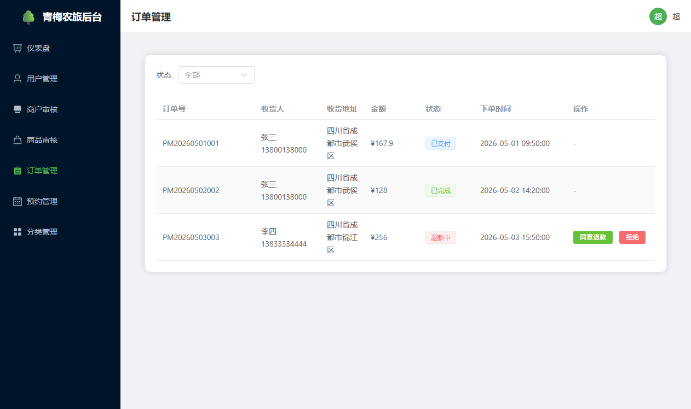
订单管理订单号、收货人、金额、状态、下单时间
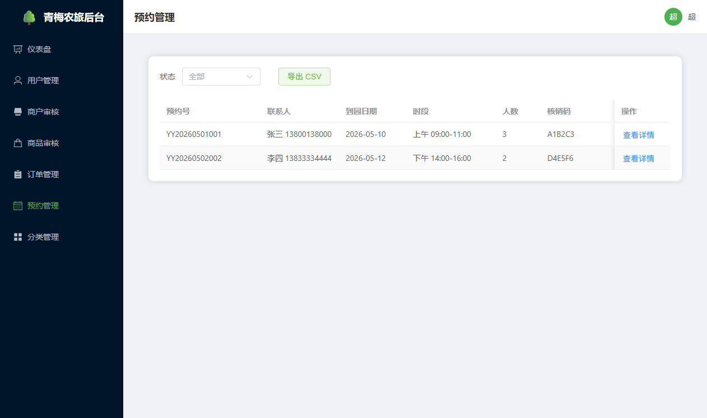
预约管理预约号、到园日期、时段、人数、核销码；导出 CSV
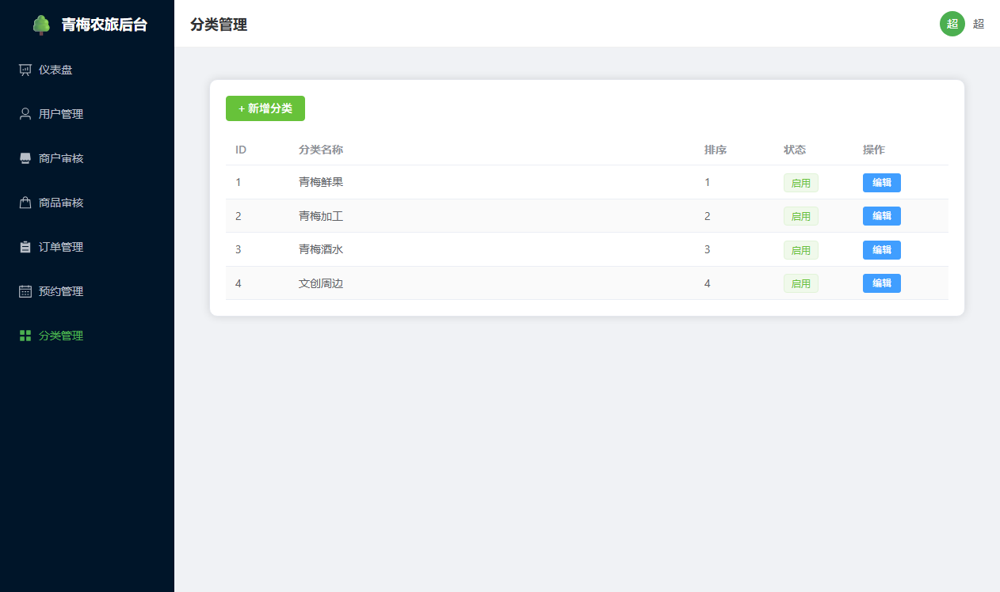
分类管理新增分类；分类名称、排序、启用状态、编辑
二、H5 网页 归档截图
桌面视口下的 H5 首页，uni-app 同一套代码在浏览器中的呈现。
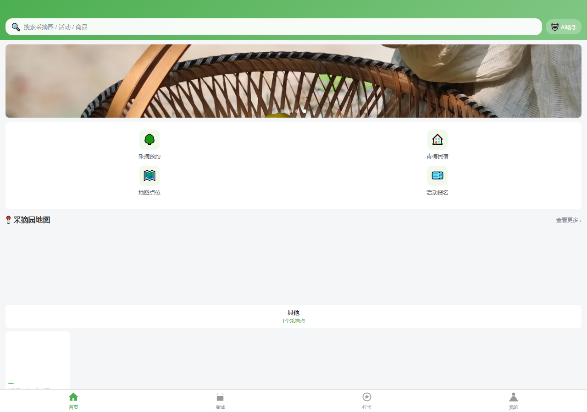
H5 首页（早期版本）搜索框、AI助手、轮播、四宫格入口、采摘园地图、底部 tabBar
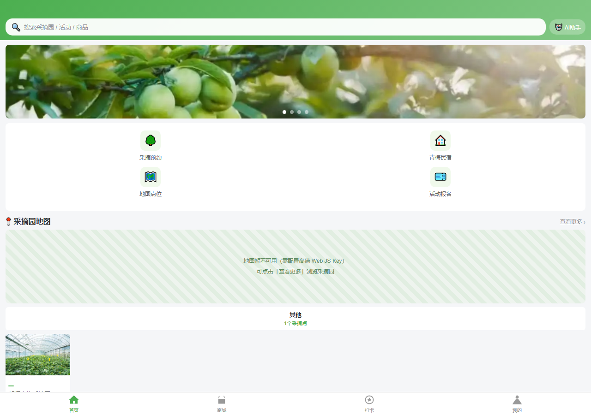
H5 首页（最终巡检版）补齐轮播与图片；地图仍为高德 Key 缺失占位
三、小程序 / 移动端界面 归档截图 · 375×812
微信小程序与 H5 共用 uni-app 源码，下列为移动视口巡检截图，可代表小程序端界面。
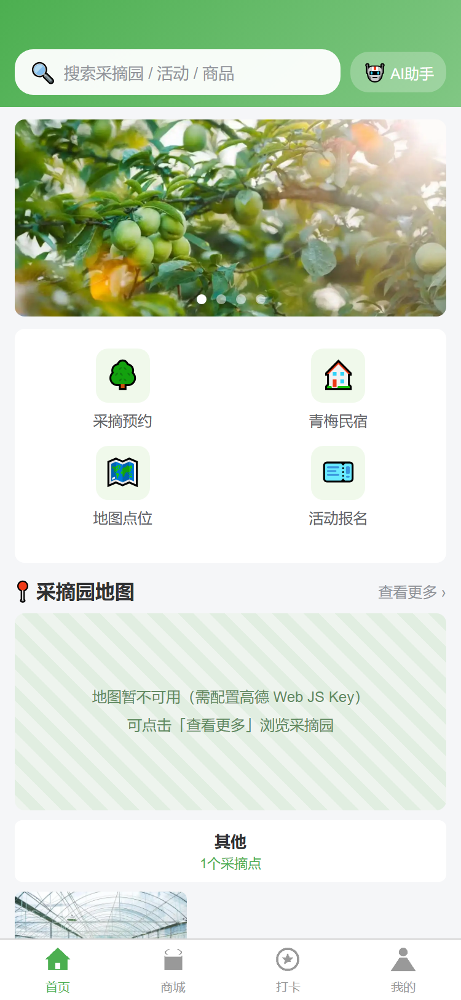
首页 / tabBar搜索、AI助手、采摘预约、青梅民宿、地图点位、活动报名、采摘园地图、热门研学
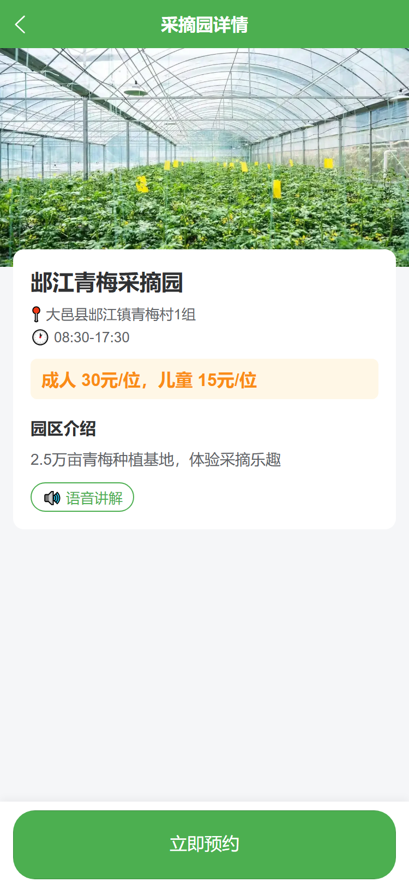
采摘园详情园区图、地址、营业时间、票价、园区介绍、语音讲解、立即预约
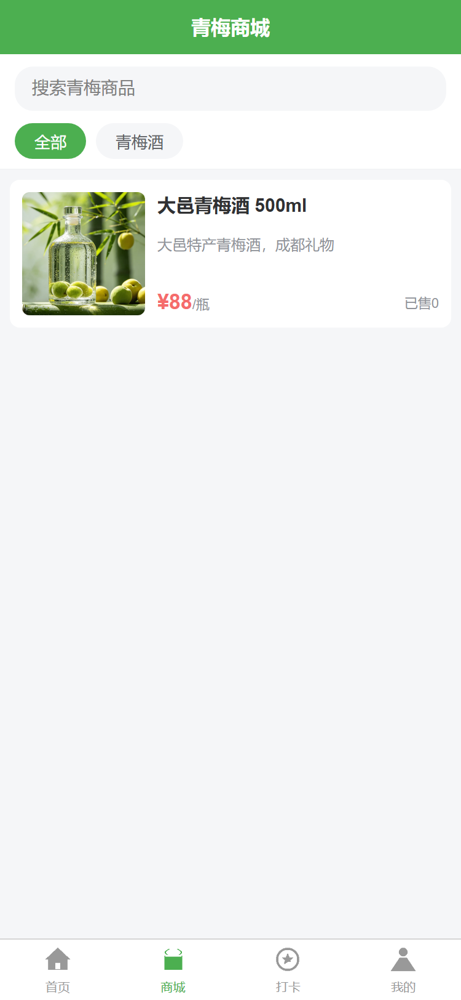
青梅商城搜索、分类筛选、商品列表（当前仅 1 件商品）
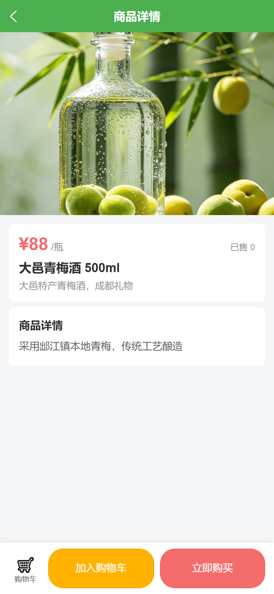
商品详情大图、¥88/瓶、商品详情、购物车 / 加入购物车 / 立即购买
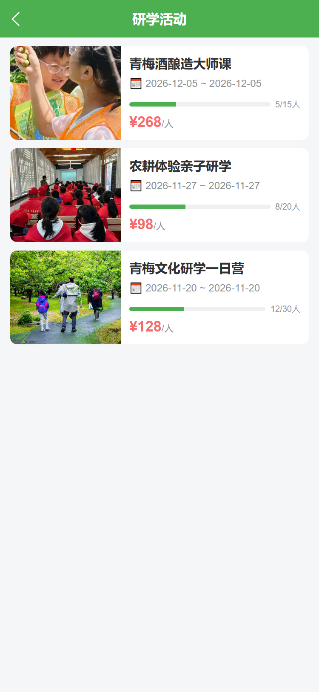
研学活动3 门课程、日期、报名进度、单价
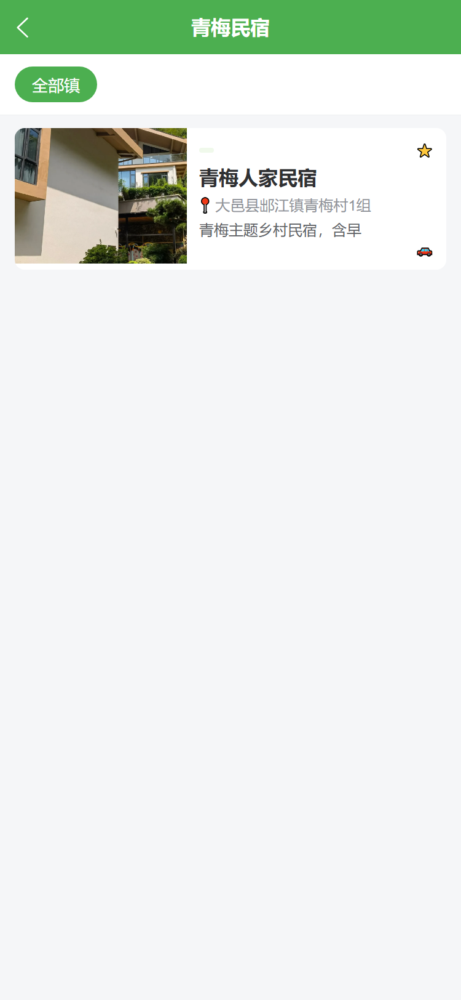
青梅民宿民宿列表（当前仅 1 家）